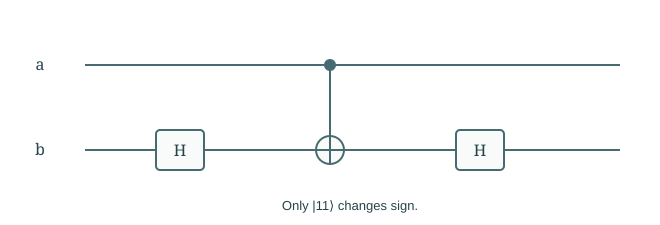
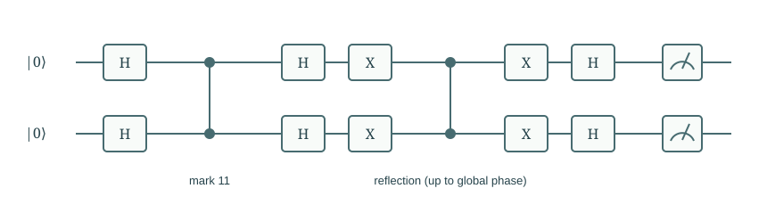

Chapter 08
Quantum Circuits and Universality
The preceding algorithms specify mathematical operations. Circuits expose how these operations are assembled and which implementation costs an abstract oracle can hide.
In this chapter · 4 sections · 12 topics
8.1
Circuit Representation
Circuit drawings record the order and subsystem support of operations.
8.1.1 Wires and gate ordering§
A circuit displays a sequence of operations with time increasing left to right. Each horizontal wire identifies a subsystem; a box denotes an operation. A wire does not carry a definite classical value when it belongs to a superposition or an entangled register. To interpret a circuit, track the joint vector between columns. If the first gate is \(U\) and the next is \(V\), the final state is \(VU\ket\psi\). Gates on disjoint wires act by tensor products and commute with one another, though a particular hardware schedule may impose additional constraints.
8.1.2 Circuits for query and search algorithms§
The earlier algorithms now supply concrete reading exercises. In Deutsch’s circuit, the first H pair prepares the query state; the oracle encodes signs; the last H exposes their relation. In search, the repeated block consists of a phase oracle followed by reflection about the prepared state. Circuit notation records how to compose operations, but a box labelled \(O_f\) is still an abstract oracle until its implementation is specified. Drawing a box does not prove its cost is one elementary gate.
8.1.3 Measurement and classical control§
A measurement symbol terminates coherent evolution of that measured output within the diagram’s description and produces a classical result. Dashed lines here carry classical bits controlling later operations; solid lines carry quantum systems. A classical conditional correction means that the experimenter chooses a gate using a known outcome. It differs from a coherent controlled gate acting on an unmeasured superposition. Teleportation uses both: a coherent CNOT before measurement and classically controlled corrections afterward.
8.2
Gate Constructions
We construct the gates and phase operations already used in the algorithms.
8.2.1 Pauli, Hadamard, and rotation gates§
The basic matrices are \[X=\begin{pmatrix}0&1\\1&0\end{pmatrix},\quad Z=\begin{pmatrix}1&0\\0&-1\end{pmatrix},\quad H=\frac1{\sqrt2}\begin{pmatrix}1&1\\1&-1\end{pmatrix}.\] Also \(Y=\begin{pmatrix}0&-i\\i&0\end{pmatrix}\). For any Pauli matrix \(P\), define \(R_P(\theta)=\cos(\theta/2)I-i\sin(\theta/2)P\). Since \(P^2=I\), this is unitary. The phase gates \(S=\operatorname{diag}(1,i)\) and \(T=\operatorname{diag}(1,e^{i\pi/4})\) provide useful fixed relative phases. These formulas define the gates without requiring calculus or matrix exponentials.
8.2.2 Controlled and entangling gates§
A controlled-U is \(\ket0\bra0\otimes I+\ket1\bra1\otimes U\). It retains the control and conditionally transforms the target. CNOT is controlled-X; controlled-Z changes only the sign of \(\ket{11}\). Conjugating the target of CNOT by H gives controlled-Z because \(HXH=Z\). Not every controlled operation creates entanglement on every input, but CNOT can do so on \(\ket+\ket0\). Arbitrary local gates alone preserve product structure; an entangling operation is needed for general joint transformations.

8.2.3 Oracle and reflection circuits§
A phase mark for a particular bit string can be built by flipping its zero positions, applying a phase flip controlled on all ones, and undoing those flips. A computed predicate can instead use compute–phase–uncompute. For uniform search, \(D=H^{\otimes n}(2\ket{0^n}\bra{0^n}-I)H^{\otimes n}\). The two-qubit drawing uses X gates and controlled-Z to realize the zero-state phase flip, producing \(-D\), which differs only by a harmless global phase in an uncontrolled Grover iteration. A controlled use would require tracking that phase explicitly.

8.3
Universal Gate Sets
A universal set must do more than independently rotate each qubit.
8.3.1 Limits of local operations§
A sequence made entirely of one-qubit gates has the form \(U_1\otimes\cdots\otimes U_n\). On a product input it produces another product state. It therefore cannot prepare a Bell state from \(\ket{00}\), regardless of how many local gates are used. This argument establishes a structural limitation without counting gates. Universal circuit construction needs a way for information in different subsystems to affect the joint state coherently.
8.3.2 Entangling gates and universality§
Arbitrary single-qubit unitaries together with CNOT form a universal gate set for finite-qubit unitaries. One route to the theorem decomposes a matrix into two-level unitaries, each acting on a pair of basis vectors, and then implements those using controlled operations and local rotations. We state the synthesis theorem rather than prove every decomposition here. Its scope is expressibility, not efficiency: a generic operation on \(n\) qubits requires exponentially many parameters and generally many gates. Structured algorithmic operations are valuable because their descriptions permit economical constructions.
Further detail: Barenco et al.: Elementary gates for quantum computation.
8.3.3 Exact synthesis and approximation§
A finite set such as Clifford+T generates a dense collection of unitaries, enabling approximation to any desired accuracy; it cannot express every continuously parameterized unitary exactly with a finite word. A useful target is operator-norm error \(\|U-V\|\leq\epsilon\), which bounds the output-vector error for every unit input. If a circuit contains \(L\) approximated gates, errors can be budgeted so their sum is at most the desired tolerance. Precision belongs in the resource analysis: a gate count without its accuracy requirement is incomplete.
8.4
Implementation Resources
Expressibility, efficient synthesis, and reliable execution are distinct requirements.
8.4.1 Gate count, depth, and workspace§
Gate count counts elementary operations, depth counts sequential layers that cannot be run in parallel, and width counts qubits, including ancillas. These resources can trade off: extra workspace may reduce depth, while repeated recomputation may save space. Clean ancillas must be initialized and usually restored for reuse. A uniform circuit family has a classical procedure generating the circuit for each input length; efficiency requires that construction to be efficient too. Otherwise a short circuit might conceal difficult work in its specification.
8.4.2 Connectivity and data preparation§
An abstract circuit may connect any pair of qubits, while a device permits only nearby interactions. Routing can add SWAP gates, count, and depth. Preparing an arbitrary list of amplitudes may itself require work proportional to the list size; it cannot be assumed free because the final register is small. Likewise, the arithmetic that implements a predicate may outweigh the number of oracle calls. A resource estimate should specify gate set, connectivity, input preparation, and output extraction before translating an asymptotic advantage into an implementation claim.
8.4.3 Error accumulation and reliability§
Small coherent gate errors and stochastic noise can accumulate across a long circuit. Approximation error in ideal synthesis is different from physical noise, although both affect predictions. Reliable computation uses encoded logical information, syndrome extraction, and correction or fault-tolerant control. The no-cloning theorem does not forbid error correction: quantum codes encode one logical state into correlations, not independent readable copies. This book does not develop a noise model or threshold theorem. It identifies reliability as an additional resource requirement beyond proving an ideal algorithm correct.